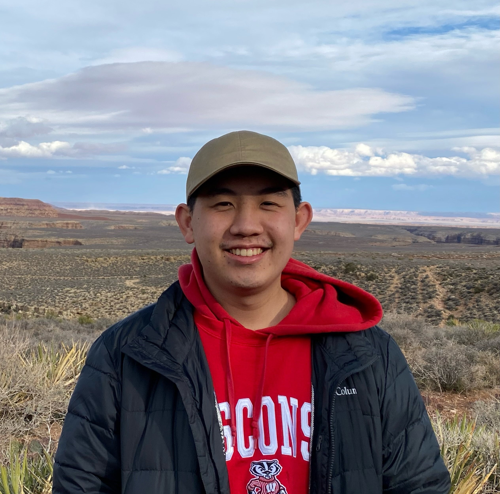

Adrian Lo
UChicago Grad | Computer Science and Music | Composer
awylo@uchicago.edu
Work History
Intern at Lingnan University Office of Service-Learning
June 2023 - September 2023
- Designed and curated an interactive LED art installation for Lingnan M+ Tower Campus with Rasberry Pi and Python.
- Initiated prototyping of a private healthcare insurance chatbot using Azure OpenAI API.
Intern at WholesomeZine
June 2022 - September 2022
- Developed an email signature generator for company website with HTML/CSS/JS.
- Created a prototype of the WholesomeZine App using Figma.
- Managed the migration of existing content to the new company website using Squarespace’s API.
Transcriptionist for Professor Michael Kremer
March 2023 - March 2024
- Manage transcription of recordings into digital documents and emails.
- Incorporated handwritten edits from Professor Kremer into working documents.
- Coordinated Professor Kremer’s schedule and worked with transcription team to ensure consistent weekly
coverage.
Leadership and Activities
Composer and Music Director for Strings Attached
June 2023 - May 2024
- Collaborated closely with other directors to align musical direction with overall production goals.
- Directed music rehearsals with actors and pit orchestra.
- Integrated feedback from directors and performers to refine and enhance musical pieces and performances.
- Composed and arranged half of the original score for the production
Art Liason for UChicago Artspass Program
October 2021 - September 2022
- Work with fellow liaisons to advertise art opportunities in Chicago to UChicago students through email newsletters and social media.
- Networked with National Veterans Art Museum, Ukrainian Institute of Modern Art and other UChicago ArtsPass partners.